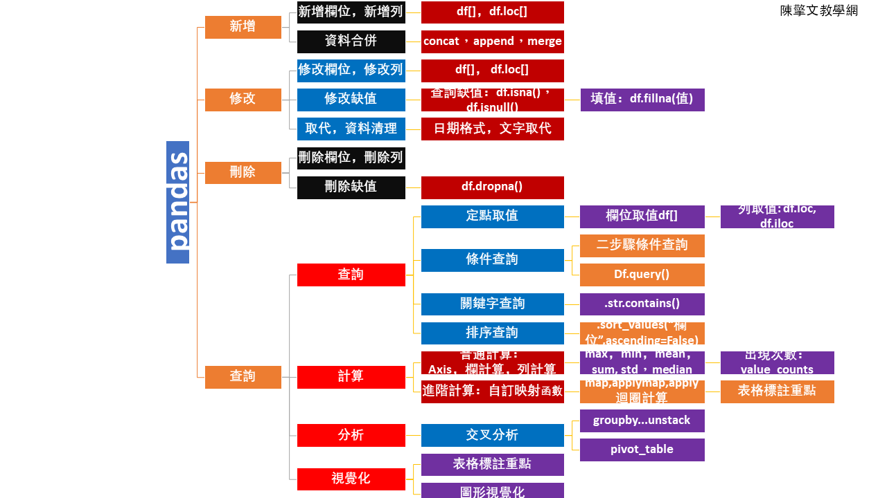

陳擎文教學網：pandas商業數據程式分析(精簡版)
數據分析師：21 世紀最性感的工作
自從《哈佛商業評論》2012 年 10 月以一篇《數據分析師：21 世紀最性感的工作》爆紅後，協助企業進行大數據分析的「數據分析師」或「資料科學家」，就被視為是近年最熱門的工作
☎數據分析的一體化流程：數據採集 ➜ 數據清洗 ➜ 數據『查詢、計算』 ➜ 數據分析與挖掘 ➜ 數據可視化 ☎相關證照： 中華企業資源規劃學會，大數據分析師， 商用數據應用師 ☎完整版網站： pandas商業數據程式分析(完整版) |
|||||||||||
chp3.Python數據分析最重要的四個模組：pandas，matplotlib，numpy，scipy chp6.資料的【查詢】（關鍵字查詢，條件查詢，多條件查詢，排序次序，定點查詢） chp7.資料的【新增，修改，刪除】（索引鍵index的應用） chp8.基礎數據【計算】（資料軸Axis的應用）： 欄計算，列計算(max，min，mean，sum, std，median) chp10.進階數據【計算】（使用自訂映射函數：map，applymap，apply來轉換計算） chp11.【表格視覺化】(熒光筆標註重點)： 設定樣式style：反白標註highlight_max，漸層標註gradient chp13.建立一維資料結構Series，建立二維資料結構DataFrame chp14.【數據分析1】：頻數分析(一維欄位，value_counts) ☎重要性：頻率分析是指對數據集中的數據進行統計分析，計算每個值出現的次數，以便對數據集進行更深入的分析 ☎指令1：用 value_counts() 函數對一維Series進行頻率分析 📣14-1-一維數據的頻數分析(查幾種unique，有種類數nunique，查每種的數量value_counts) 📣14-3-一維數據統計數目的2種做法(value_counts，groupby().size())，新生入學人數比較圖，地區比較圖
（1）性別有哪幾種？：df['性別'].unique() chp15.【數據分析2】：分群比較分析(分1群後，對應第2欄位統計，groupby) ☎重要性：Groupby 是Pandas 中的一個很強大的操作方法。它可以將資料「分群/分組」，之後在分群的資料上做運算，然後再將運算的結果組合起來 ☎指令1：用 df.groupby("性別").size() 對性別欄位進行分群，並統計數量 ☎指令2：用 df.groupby("性別")['數學'].mean() 對性別欄位進行分群，並計算對應數學的平均分數 📣15-1-建立性別欄位的分群groupby()，統計數量.size()，取出子群get_group('男') 📣15-3-一維數據統計數目的2種做法(value_counts，groupby().size())，新生入學人數比較圖，地區比較圖 📣15-4-分群的各種應用：男女數學平均，男女最高分，男女最高分是誰 📣15-5-一維數據統計數目的2種做法(value_counts，groupby().size())，新生入學人數比較圖，地區比較圖 📣15-6-一維數據統計數目的2種做法(value_counts，groupby().size())，新生入學人數比較圖，地區比較圖 （1）重點1：Groupby的特色： (A).Groupby 是Pandas 中的一個很強大的操作方法。它可以將資料「分群/分組」，之後在分群的資料上做運算，然後再將運算的結果組合起來： (B).pandas 其中一個最重要的功能，就是groupby，是一個很強大的操作方法。 (C).它可以將資料「分群」，之後在分群的資料上做運算，然後再將運算的結果組合起來。 (D).例如1：老師想看一年級中，不同班級的「數學」以及「英文」成績的平均值 (依班級分群，在分群中做平均值運算)。 (D).例如2：國家想統計不同都市中收入的中位數 (依都市分群，在分組中取中位數)， 都可以使用 groupby 運算達成。 (E).規律原則：如果資料中有「類別變數」出現，那通常就會有 groupby 的需求。 例如：性別(男/女)，班級(1A/1B/1C)，等級(A/B/C)，洲(亞洲/非洲/美洲)，膚色(黑/白/黃)…等 （2）groupby分解與重組示意圖：  groupby結構示意圖2 groupby結構示意圖3 groupby結構示意圖4 groupby結構示意圖5 chp16.【數據分析3】：分2群比較分析(多層分群，多層索引鍵分析的2種方法) ☎重要性：多層分群是『交叉分析，樞紐分析』的基礎 ☎解法：多層索引鍵分析，有2種方法 ☎方法1：用groupby(["分群1","分群2"]) ☎方法2：先設定2層索引鍵，再用df.xs("社會組",level="選組")跨層級查詢 chp17.【數據分析4】：分2群比較分析(交叉分析表，樞紐分析表) ☎重要性：商業數據分析，一個重要的目的：就是要分析不同參數之間的彼此關係 ☎方法：必須先建立『樞紐分析表』(交叉分析表)，然後再繪圖這個樞紐分析表，就可以達成分析目的 ☎指令1：用groupby...unstack法 ☎指令2：pivot_table法 📣17-1-樞紐分析表的必要指令unstack：把列索引鍵調換成欄索引(unstack展開) chp18.【數據分析5】：Groupby分群分析的5種題型 （1）型態1：(1個分群，1組統計次數)的頻數分析【1變數x： size=f(x)】 （2）型態2：(2個分群，1組對應統計次數)的樞紐分析表，交叉分析圖【2變數x,y： size=f(x,y)】 📣18-2-型態2：分析不同入學年份，男女的人數統計：groupby...unstack法 📣18-3-型態2：分析不同入學年份，男女的人數統計：pivot_table法 （3）型態3：(2個分群，1組對應)之樞紐分析表，交叉分析圖【3變數x,y,z： z=f(x,y)】 📣18-4-型態3：顯示總和的樞紐分析表，交叉分析圖【3變數x,y,z： z=f(x,y)】 （4）型態4：(1個分群，2組對應)之分析表/圖【3變數x,y1,y2： y1=f1(x), y2=f2(x)，y1y2不同群組不同刻度】 📣18-5-型態4：不同業務單位的『銷售數量總和，銷售金額總和』對應表格與圖 （5）型態5：(1個分群，3xn組對應新增欄位(mean,max,min)）之對應分析表/圖【4變數x,y1,y2,y3： y1=mean(x), y2=max(x), y3=min(x)，y1y2y3不同群組不同刻度】 chp19.【數據分析6】：樞紐分析表，交叉分析圖的花式變化與進階技巧
【折線圖，line】
【柱狀圖/長條圖(看類別比較)，bar】 📣20-3-柱狀圖，堆疊柱狀圖（堆疊stacked=True） 【餅狀圖/圓形圖(百分比)，pie】 📣20-6-數學成績餅狀圖pie，突出最高分explode，顯示百分比 📣20-7-餅狀圖自動顯示數學最低分的是誰(自動設定最低者的突出值) 【直方圖(看頻率分佈)，hist】 【箱型圖(看頻率分佈)，box，boxplot】 📣20-10-箱型圖box，更簡單地顯示數值頻率分佈：Q1(25%)，Q1(50%)，Q3(75%) 【分群圖(2組資料比較圖)，df.groupby.plot()】 📣20-12-分群groupby繪柱狀圖bar，鐵達尼號存亡分群下，看男女數量比較 📣20-13-分群groupby直方圖hist，鐵達尼號存亡分群下，看年齡頻率分佈 📣20-14-分群groupby箱型圖box，鐵達尼號存亡分群下，看年齡頻率分佈(用箱型圖看分佈) 【散佈圖/點分佈圖(看2/3組資料有否關聯)，scatter】 📣20-15-產品的運動時間,卡路里,脈搏關係圖(3組資料散佈圖scatter：設定(x,y,c) 📣20-16-鐵達尼號3組資料關係圖(散佈圖scatter) 【畫多個子圖，二種方法】
【輸出到excel，並且繪圖，並且輸出多個sheet】
| pandas學習流程圖綱要flow chart（簡易重點):  （1）新增： ☎新增列，新增欄位：df[], df.loc[]：7-1 ☎資料合併：concat（12-1）， append（12-2）， merge（12-3）， merge（12-4）， merge（12-5） （2）修改（資料清理）： ☎修改列，修改欄位：df[], df.loc[]：7-3 ☎查詢缺值：df.isna()，df.isnull() : 9-1， 9-2 ☎修改缺值：填值：df.fillna(值)： 9-4， 9-5 ☎修改文字： ☎修改日期： （3）刪除（資料清理）： ☎刪除列，刪除欄位：df[], df.loc[]：7-2 ☎刪除缺值：df.dropna()：9-3 （4）查詢： (4-1)查詢： ☎定位取值：df[], df.iloc[], df.loc[]：6-4， 6-5， ☎條件查詢：2步驟條件查詢，多條件查詢：()&()，()|()：6-1 ☎df.query() ☎關鍵字查詢：.str.contains()：6-2 ☎排序查詢：.sort_values(“欄位”,ascending=False)：6-3 (4-2)計算： ☎基本計算：Axis，欄計算，列計算：max，min，mean，sum, std，median：8-1 ☎計算出現次數：value_counts：8-2 ☎進階計算：使用自訂映射函數：map，applymap，apply來轉換計算： 10-5， 10-6， 10-7， 10-8， (4-3)分析： ☎【數據分析1】：頻數分析(一維欄位，value_counts)： 14-1， 14-2， 14-3， ☎【數據分析2】：分群比較分析(分1群後，對應第2欄位統計，groupby)： 15-1， 15-2， 15-3， 15-4， 15-5， 15-6， ☎【數據分析3】：分2群比較分析(多層分群，多層索引鍵分析的2種方法)： 16-1， ☎【數據分析4】：分2群比較分析(交叉分析表，樞紐分析表)： 17-1， 17-2， 17-3， ☎【數據分析5】：Groupby分群分析的5種題型： 18-1， 18-2， 18-3， 18-4， 18-5， 18-6， ☎【數據分析6】：樞紐分析表，交叉分析圖的花式變化與進階技巧： 19-1， 19-2， 19-3， 19-4， 19-5， ☎【數據分析6】：樞紐分析：pivot_table： 18-3， (4-4)視覺化： ☎表格視覺化：表格標註重點： 11-1， 11-2， 11-3， ☎圖形視覺化： 【折線圖，line】： 20-1， 20-2， 【柱狀圖/長條圖(看類別比較)，bar】： 20-3， 20-4， 20-5， 【餅狀圖/圓形圖(百分比)，pie】： 20-6， 20-7， 【直方圖(看頻率分佈)，hist】： 20-8， 20-9， 【箱型圖(看頻率分佈)，box，boxplot】： 20-10， 20-11， 【分群圖(2組資料比較圖)，df.groupby.plot()】： 20-12， 20-13， 20-14， 【散佈圖/點分佈圖(看2/3組資料有否關聯)，scatter】： 20-15， 20-16， |
||||||||||
| 資源 | |||||
| 上課工具 | 線上黑板( Online blackboard) | 廣播教學 | pandas數學家分析(完整版) | 上課錄影影片 | Goole輸入法(Input:exe) |
| 證照考試：商用數據應用師 | 考試題庫 (從中約抽70題) | 報名證照相關說明與方法 | 考試方式：100題單選題，每題1分，70分及格 | 考試指定用書 | |
| 證照考試：SAS 機器學習國際認證 | 考試題庫 | 報名證照相關說明與方法 | 先上課再考試。考試方式：50~55 題選擇題與填充題，考試語言：英文，通過標準：65%答對即通過 | 考試指定軟體：SAS Viya Virtual Lab | |
| 數據集，資料集，dataset | UCI的各種資料集 | Kaggle的各種資料集 | 考試方式：100題單選題，每題1分，70分及格 | 考試指定用書 | |
| 上課參考教材 | 書籍：跨領域學 Python：資料科學基礎養成 | 書籍：Python 資料科學與人工智慧應用實務 | 書籍：一行指令學Python：用機器學習掌握人工智慧 | ||
| 書籍：用Pandas掌握商務大數據分析 | 進階書籍：Python商業數據分析：零售和電子商務案例 | pandas官網(英文) | w3schools的pandas教學(英文) | ||
| pandas參考教材 | w3Cschool的pandas教學(中文) | Steam教學網-python | 蓋若pandas 教程 | pandas的df的操作函數 | |
| colab如何讀取google雲端硬碟的檔案 |
☎#步驟1：(A).導入Google Colab的drive模組： ☎#步驟2：(B).掛載Google Drive雲端硬碟到Colab虛擬機(/content/drive)： from google.colab import drive drive.mount("/content/drive") ☎#步驟3：(C).讀入目前虛擬目錄內，剛剛掛載的自己雲端硬碟Mydrive的檔案： df = pd.read_csv("/content/drive/MyDrive/Colab Notebooks/finance-charts-apple.csv") |
||||
| colab繪圖如何顯示中文，方法1 |
☎#colab顯示繁體中文，方法1 問題：matplotlib繪圖，會發生中文無法顯示的問題 參考：colab繪圖如何顯示中文 ☎程式碼： #-------------------------------- # colab繪圖顯示繁體中文 #-------------------------------- import matplotlib # 先下載台北黑體字型 !wget -O taipei_sans_tc_beta.ttf https://drive.google.com/uc?id=1eGAsTN1HBpJAkeVM57_C7ccp7hbgSz3_&export=download import matplotlib # 新增字體 matplotlib.font_manager.fontManager.addfont('taipei_sans_tc_beta.ttf') # 將 font-family 設為 Taipei Sans TC Beta # 設定完後，之後的圖表都可以顯示中文了 matplotlib.rc('font', family='Taipei Sans TC Beta') |
||||
| colab繪圖如何顯示中文，方法2 |
☎#colab顯示繁體中文，方法2 ☎程式碼： #-------------------------------------- # 課本的中文處理 #-------------------------------------- import matplotlib as mpl import matplotlib.font_manager as fm !wget "https://www.wfonts.com/download/data/2014/06/01/simhei/simhei.zip" !unzip "simhei.zip" !rm "simhei.zip" fm.fontManager.addfont('SimHei.ttf') mpl.rc('font', family='SimHei') # 這一行能讓字體變得清晰 %config InlineBackend.figure_format = 'retina' |
||||
| windows的spyder繪圖如何顯示中文 |
☎解決：windows的spyder，會發生中文無法顯示的問題 參考：windows繪圖如何顯示中文 ☎程式碼： #在windows 10 的spyder，繪圖如何顯示中文 #使用微軟正黑體（Microsoft JhengHei） plt.rcParams['font.sans-serif'] = ['Microsoft JhengHei'] #有些中文字體在碰到負號時，會無法正常顯示，尤其是內建的字體，加入以下語法就可以解決『負號無法顯示』問題 plt.rcParams['axes.unicode_minus'] = False |
||||
| 在colab如何更改目錄 |
☎解決：在colab如何更改目錄的問題 ☎程式碼： import os os.chdir("/content/drive/MyDrive/Colab Notebooks") !ls |
||||
| 解決簡體字csv造成亂碼 |
☎解決簡體字csv，打開後都是亂碼的問題： 第2 種方式： （1）先執行Excel 軟體，新增空白活頁簿， （2）然後在上方功能選項中點選「資料」➜「取得外部資料」➜ 「從文字檔」 → 「選擇csv文件」， 選擇你的CSV 檔， 在「匯入字串精靈」對話框中選擇檔案原始格式65001:Unicode(UTF-8) 即可。 若是utf-8還是有亂碼，再改成 在「匯入字串精靈」對話框中選擇檔案原始格式54986:簡體中文(GB18080) 即可。 （3）打勾：我的資料有標題 （4）分隔符哈：逗號 |
||||
| 程式模板 |
☎存入excel檔案，並且畫柱狀圖
|
||||
| 程式模板chp8-6.樞紐分析表的必要指令：展開 |
☎輸出excel檔案：建立3個資料表sheet（英文成績，數學成績，中文成績）
|
||||
| 打開chrome網頁線上英文字典功能 |
☎如何安裝google chrome的網頁線上英文字典工具： ➜google chrome的右上角工具➜更多工具➜擴充功能 ➜左上角主選單➜開啟chrome線上應用程式商店 ➜勾選：google製作，免費 ➜搜尋：google dictionary➜安裝 ➜到chrome右上擴充功能➜點按google dictionary的『詳細資料』➜擴充功能選項 ➜my language=chinese ➜打勾2個：Pop-up definitions: （1）反白單字翻譯：Display pop-up when I double-click a word （2）ctrl+拖曵整段翻譯： Display pop-up when I select a word or phrase |
||||
| 上課用excel | 學生成績-chinese | 學生成績-有缺值-chinese | 學生成績-物理歷史-chinese | 學生成績-amy-simon-chinese | |
| 學生成績-生日-chinese | 學生成績-分組-chinese | 人事資料-chinese | 男女時薪-chinese | ||
| 學生成績-english | 學生成績-有缺值-english | 學生成績-分組-english | 圖書資料-chinese | ||
| 上課用csv | 小費tips-chinese | 小費tips-english | 學生成績-chinese | 學生成績-english | |
| 圖書資料-chinese | |||||
| 上課用其它資料庫 | mySQL-ch09 | SQLite-student | json-學生成績 | xml-personnel | |
| 課本商業範例資料庫 | 商業銷售分析-sales csv | 系所生源分析-excel | 股市分析-台積電聯發科股票線型-excel | 問卷資料分析-excel | |
| pandas參考教材 | 十分鐘入門 Pandas(英文) | 十分鐘入門 Pandas(英文) | 10分鐘的Pandas入門-繁中版 | 十分鐘入門 Pandas(中文) | |
| pandas參考教材 | pandas官網全部章節翻譯 | pandas官網全部章節翻譯 | |||
| pandas參考教材(英文) | kaggle pandas教學 | 100 pandas tricks to save you time and energy | 官網0.22.0:pandas documentation | ||
| pandas參考教材(中文) | Pandas 101：資料分析的基石 | 資料科學家的pandas 實戰手冊：掌握40 個實用 | 簡明 Python Pandas 入門教學 | 資料分析必懂的Pandas DataFrame處理雙維度資料方法 | |
| pandas速查手冊 | pandas 速查手册 - 盖若 | Pandas速查手冊中文版 - 知乎專欄 | Pandas速查手冊中文版- 騰訊雲開發者社區 | ||
| pandas速查手冊 | Pandas中DataFrame基本函數整理（全） | Pandas 魔法筆記(1)-常用招式總覽 | pandas的df的操作函數 | ||
| 資料集dataset | 小費資料集Tips Dataset(csv) | kaggle小費資料集範例A Waiter's Tips example | 【視覺化】小費（tips）資料集分析 | 小費（tips）資料集提取和檢視相應資料 | |
| SQL語法 | SQL語法教程 | pandas vs SQL | |||
| 資料分析4大模組（runoob) | numpy | pandas | matplotlib | scipy | |
| w3c、w3school、w3cschool、runoob、w3capi比較 | runoob流量監控儀表板 | ||||
| w3school vs runoob |
1.w3school中文版是直接google翻譯英文版 2.runoob.com翻譯自英文版w3schools，但重新排版 3.runoob = run + noob(菜鳥，小白) 4.runoob是python，html，javascript中文版最好的教學網 |
||||
| 官網 | python官網 | vscode官網 | |||
| python 教學網站 | python 3(官網手冊中文) | python 3教學(中文) | python 3教學(中文) | 簡易1小時教學 | |
| w3school(英文版) | |||||
| 線上執行python online |
https://www.python.org/shell/（建議用這個） https://repl.it/languages/python3 |
||||
| 用Anacond寫python(*建議使用) | |||||
| 作業（homework） | |||||
| 作業1 | |||||
| 作業2 | |||||
| 作業3 | |||||
| 作業4 | |||||
| side project 1 |
第一個side project（可以放到你的履歷當做作品集） 題目： 這個是委託案，來自某私校大學系主任，因為招生日益困難，因而委託你：做學生來源落點的分析專案， 請你從各種角度來分析客戶群的潛在落點所在，探討逐年變化，並分析過去歷史的強項所在與弱項所在， 最後，請你寫個簡單的結案摘要，告訴業主，該如何做，才能改善招生率 |
||||
| side project 2 |
第二個side project（可以放到你的履歷當做作品集） 題目： 你是A公司的新進商業數據分析師，A公司今年2016年業績大幅下滑，公司想請你分析歷年數據後，寫份摘要報告，從各種不同角度分析，包括：『不同業務單位、不同業務員、不同產品、逐年、每季、每月』的分析，找出業績下降的原因，以及如何改善。 請多用定量描述的方式，來證明你分析觀點的可靠性、準確性與權威性，以建立個人數據分析的品牌與形象。 |
||||
| chp1-1.前言 | |||||
| 1.課程簡介投影片 | 2.學習程式的3種方法 | ||||
範例1-2.數據分析3部曲，與對應的工作職缺（1）研究數據分析的3步驟圖：
|
|||||
|
|||||


範例1-3.數據分析常用工具（1）資料分析常用工具：
|
|||||
|
|||||


範例1-4.數據相關的證照（1）資料分析相關的證照：中華企業資源規劃學會『商用數據應用師』證照
|
|||||
|
|||||
範例1-5.數據分析的內容是什麼？
數據分析的內容主要分三種（統計，比較，預測）
|
|||||
|
|||||
範例2-1.現今企業的數據有哪些：（1）所謂大數據，即是透過不同來源、渠道取得的海量數據資料現今企業如果想做數據蒐集的方法變得非常多元，包括：（2）來自用戶的第一方數據：☎傳統的用戶資料建檔、問卷調查，☎網頁的瀏覽行為等數據的追蹤， ☎App應用程式的瀏覽行為等數據的追蹤、 ☎物聯網IoT設備傳遞的數據等， 這些都是可以蒐集到。 還有更多可捕捉用戶站外資訊的非第一方數據也漸漸被重視， （3）透過交換共享得到的第二方數據：☎第二方數據 （也稱為第二方或 2P 數據）：是另一個同行公司收集的數據，但可由另一家公司通過購買或協作訪問。☎營銷人員在希望擴展其營銷資料庫以吸引新的潛在客戶時，通常會購買它。 ☎例如，如果一個為女性製作的服裝品牌決定增加一個男裝系列，並且需要相關的目標來行銷，就可以向外同行公司購買男裝的數據資料庫。 （4）任何與商業需求有關的第三方數據：☎第三方數據 （也稱為第三方或3P數據）：是來自第三方的數據，該第三方已聚合了多個數據源並使其可供購買。☎第三方數據的缺點：是它可能缺乏準確性和品質，因此重要的是了解數據來自何處以及數據使用年限. （5）比較：第一方、第二方和第三方數據之間的差別：第一方、第二方和第三方數據之間的主要區別在於：『來源』。☎第一方數據：由其『存儲/擁有的公司』收集。 ☎第二方數據：由『同行公司』收集，並由另一家公司購買（或通過合作協定與他們共用）。 ☎第三方數據：是從『多個未知來源』收集的，並由一家公司購買。  （6）參考文獻： 1.第一方、第二方、第三方和零數據對廣告商意味著什麼 2.分析大數據在各領域的應用 |
|||||
|
|||||
範例2-2.市場上的數據需求，主要分為四個階段：☎數據蒐集、☎數據分析、 ☎數據應用
（1）數據蒐集：蒐集第一方、第二方和第三方數據
|
|||||
|
|||||


2-3.資料生產的四步驟：• 資料指標體系搭建• 資料獲取 • 資料存儲 • 數據清洗 2.建立資料後，即可開始資料分析  |
|||||
|
|||||
2-4.資料最基本的三個概念：☎顆粒度☎維度 ☎指標
（1）顆粒度
☎資料的顆粒度是指數據的 “粗細”，也就是我們看資料的視野的大小，或者說格局的大小。 |
|||||
|
|||||
2-5.為什麼有大數據的問題
現在的企業資料，因為以下的興起，造成大量數據的需求：
☎網路網路資料（社交網站，交易資料） |
|||||
|
|||||


2-6.大數據分析與傳統商業分析的差異
|
|||||
|
|||||

2-7.大數據的分析步驟：取得，儲存，運算，視覺化
|
|||||
|
|||||
1.三大視覺化工具：Power BI，Tableau，Data Studio
|
|||||
|
|||||


2-9.大數據的類型：結構化、非結構化、半結構化資料
|
|||||
|
|||||


| chp2.安裝與使用python的四種方法 | |||||
| 1.使用python的四種方法 | 2.Anaconda下載點 | 3.安裝anaconda | 4.Anaconda cmd指令 | ||
| 5.建立Anaconda虛擬環境 | 6.使用Spyter編譯器 | 7.網頁版python編輯器jupyter notebook | 8.其它線上雲端可編譯的python平台 | ||
1.前言 |
Python堪稱是大數據與AI時代的最重要程式語言，在資料處理上有著非常重要的地位。而隨著AI的興起，讓傳統的零售業、金融業、製造業、旅遊業，以及政府都爭相投入，無不希望能運用數據分析與預測來協助決策方向，也讓新興的數據分析師、資料分析師成為熱門職業，因此本課程將講解如何使用網絡爬蟲技術以掌握資料爬取分析、視覺化呈現，以及儲存交換應用的關鍵技術。 Python資料處理的三大技術分別是：擷取分析、視覺化呈現與儲存應用。 而其應用的範疇包括：網路爬蟲、資料正規化、資料視覺化、資料儲存與讀取(CSV、Excel、Google試算表、SQLite、MySQL)、批次檔案下載、公開資料應用、API建立、驗證碼辨識。 |
||||
Python大數據分析最重要的四個模組 |
1.Python大數據分析最重要的四個模組 |
||||
2.執行python的四種方法 |
1.要編寫python有四種的方法：
缺點：功能陽春，沒有太多的模組，無法馬上寫大數據分析程式。 |
||||
3.Anaconda下載點 |
|
||||
| 3.安裝anaconda |
3.安裝anaconda 功能：原始的python功能太陽春，若下載anaconda，則可以提供300多種的科學數學模組，可以提供大數據資料分析 （1）Anaconda是一個免費的Python和R語言的發行版本，用於計算科學（資料科學、機器學習、巨量資料處理和預測分析） （2）因為Anaconda有很多的數據分析模組，所以大數據分析會使用到的『pandas、Numpy、Scipy』python package套件，在anaconda安裝完成時就已經包含在裡面了。 （3）Anaconda中文是森蚺（大蟒蛇）。 1)可以把Anaconda當作是Python的懶人包，除了Python本身(python2, 3) 還包含了Python常用的資料分析、機器學習、視覺化的套件 2).完全開源和免費 3).額外的加速、優化是收費的，但對於學術用途可以申請免費的 License 4).全平台支持：Linux、Windows、Mac 5).支持 Python 2.6、2.7、3.3、3.4，可自由切換, 6).內帶spyder 編譯器（還不錯的spyder編譯器） 7).自帶jupyter notebook 環境 （就是網頁版的python編輯器，副檔名為IPthon） （4）常用套件：  Numpy: Python做多維陣列（矩陣）運算時的必備套件，比起Python內建的list，Numpy的array有極快的運算速度優勢 Pandas：有了Pandas可以讓Python很容易做到幾乎所有Excel的功能了，像是樞紐分析表、小記、欄位加總、篩選 Matplotlib：基本的視覺化工具，可以畫長條圖、折線圖等等… Seaborn：另一個知名的視覺化工具，畫起來比matplotlib好看 SciKit-Learn: Python 關於機器學習的model基本上都在這個套件，像是SVM, Random Forest… Notebook(Jupyter notebook): 一個輕量級web-base 寫Python的工具，在資料分析這個領域很熱門，雖然功能沒有比Pycharm, Spyder這些專業的IDE強大，但只要code小於500行，用Jupyter寫非常方便，Jupyter也開始慢慢支援一些Multi cursor的功能了，可以讓你一次改許多的變數名稱 （5）優點：省時：一鍵安裝完90%會用到的Python套件，剩下的再用pip install個別去安裝即可 （6）缺點：占空間：包含了一堆用不到的Python的套件(可安裝另一種miniconda) （7）下載網址：https://www.anaconda.com/ 選擇個人版：indivisual https://www.anaconda.com/products/individual →Download →Windows Python 3.7（會自動幫你安裝Python 3.7） 64-Bit Graphical Installer (466 MB) 32-Bit Graphical Installer (423 MB) （8）安裝過程，要勾選 不勾選：add the anaconda to the system PATH（但是2020年，ananconda不建議勾選這個，容易發生錯誤） 勾選：Register anaconda as system Python 3.7 （9）安裝結束 →在windows開始→anaconda有6個項目，最常用的有3個 （1）anaconda prompt：可以直接下cmd指令 （2）Spyter：編譯器（還不錯的spyder編譯器） （3）jupyter notebook（網頁版的python編輯器，副檔名為IPthon） |
||||
| 4.Anaconda prompt：cmd指令 |
4.使用anaconda prompt：直接下cmd指令 注意：windows 10 必須使用管理員來執行（點選anaconda prompt→滑鼠右鍵→以系統管理員身份進行） （1）列出目前已經安裝的anaconda的模組與版本： conda list （2）對某個模組更新安裝 conda update 模組 範例：conda update ipython （3）安裝某個模組 方法1：conda install 模組 範例：conda install numpy # 安裝 NumPy 1.15 以後、 1.16 以前 conda install 'numpy>=1.15,<1.16' 方法2：pip install 模組 範例：pip install numpy （4）解除安裝某個模組 方法1：conda uninstall 模組 範例：conda uninstall numpy 方法2：輸入 conda remove PACKAGE_NAME可以從目前的工作環境移除指定套件。 # 移除 NumPy conda remove numpy numpy-base 方法3：pip uninstall 模組 範例：pip uninstall numpy （5）在anaconda prompt執行python程式 方法1： 先到工作目錄：cd ch1 執行.py程式：python test1.py 方法2：python c:\chp1\test1.py （6）常用指令 conda --version 檢視 conda 版本 conda update PACKAGE_NAME更新指定套件 conda --help 檢視 conda 指令說明文件 conda list --ENVIRONMENT 檢視指定工作環境安裝的套件清單 conda install PACAKGE_NAME=MAJOR.MINOR.PATCH 在目前的工作環境安裝指定套件 conda remove PACKAGE_NAME 在目前的工作環境移除指定套件 conda create --name ENVIRONMENT python=MAIN.MINOR.PATCH 建立新的工作環境且安裝指定 Python 版本 conda activate ENVIRONMENT 切換至指定工作環境 conda deactivate 回到 base 工作環境 conda env export --name ENVIRONMENT --file ENVIRONMENT.yml 將指定工作環境之設定匯出為 .yml 檔藉此複製且重現工作環境 conda remove --name ENVIRONMENT --all 移除指定工作環境 使用 conda list | grep numpy 檢查 Python 套件清單中是否還有 NumPy 套件 輸入 conda search PACKAGE_NAME可以檢視指定套件在 conda 中可安裝的版本列表。 # 檢視 NumPy 在 conda 中可安裝的版本 conda search numpy=1.16.3 |
||||
| 5.用Anaconda prompt來建立虛擬環境 |
5.使用Anaconda prompt來建立虛擬環境 功能：可以建立多個Anaconda虛擬環境 例如：目前安裝後預設是python 3.x版本的環境，若要創建一個python 2.x的環境，就可以在Anaconda虛擬環境實現 （1）# 檢視電腦中可使用與目前所在的工作環境 conda env list （2）使用 conda create --name ENVIRONMENT python=MAIN.MINOR.PATCH 指令可以建立出乾淨、極簡且資源隔絕的工作環境。 指令：conda create -n 虛擬環境名稱 python=版本 anaconda # 建立一個名稱為 demo 的 Python 2 工作環境 conda create --name demo python=2 範例：建立py27env環境 conda create -n py27env python=2.7 anaconda （3）輸入 conda activate ENVIRONMENT 可以啟動指定工作環境、 方法1：conda activate ENVIRONMENT 方法2：activate ENVIRONMENT 範例：activate py27env 方法3：到windows→開始→點選Anaconda prompt（py27env） （4）關閉虛擬目錄，回到原本pytohn環境(base) 使用 conda deactivate 則是切換回預設的 base 工作環境。 方法1：conda deactivate 方法2：deactivate （5）# 檢視 demo 工作環境中的套件 conda list -n py27env （5）範例 A.建立py27env虛擬環境 conda create -n py27env python=2.7 anaconda B.切換到py27env虛擬環境 activate py27env C.檢視 demo 工作環境中的套件 conda list -n py27env D.# 檢視 Python 版本 python --version E.關閉虛擬目錄，回到原本pytohn環境(base) deactivate （5）複製一個與目前pyhon環境（或是py27env） 完全相同的工作環境 conda create -n 新虛擬環境名稱 --clone root 範例：conda create -n py27env2 --clone root # 檢查明確所有虛擬環境名稱 conda info -e （6）移除某個虛擬環境 conda remove -n 虛擬環境名稱 --all 範例：conda remove -n py27env --all （7）常用指令整理 安裝：conda install 更新：conda update 移除：conda remove 在工作環境管理透過 創建：conda create 啟動：conda activate 停止：conda deactivate 匯出設定檔：conda env export 移除：conda remove |
||||
| 6.使用Spyter編譯器 |
6.使用Spyter：編譯器 （1）新增一個py檔案 File→ New file print("你好，歡迎光臨") print(1+1) Run➤ （2）開啟已經存在的檔案 方法1：File→ Open 方法2：拖曵檔案總管的py檔案到Spyder （3）在Spyter使用簡易智慧輸入 方法：按『tab』 範例： 先輸入p 然後按『tab』 出現list清單，都是p開始的指令 （4）程式除錯 方法1：若是這一行有指令寫錯，就會在最左邊出現三角形▲警告icon 方法2：在這個一行最左邊double click，就會出現中斷點（或是這一行按F12） |
||||
| 7.jupyter notebook網頁版的python編輯器 |
7.jupyter notebook （1）功能：是網頁版的python編輯器，副檔名為IPthon 會開啟瀏覽器：http://localhost:8888/tree 對應的硬碟目錄 = C:\Users\電腦名稱 （例如： C:\Users\user） （2）練習線上編輯一個簡單python程式 A.右方→New→Python3 在cell裡面輸入In[1] a = ("apple","grape","banana") print(a[2]) B.Run C.修改檔案名稱→Untitled→exp1-3 D.查詢雲端檔案放置位置：C:\Users\電腦名稱\exp1-3.ipynb （3）二種不同的Run方式 A.Run：會新增一個new cell B.Ctrl+Enter：會停留在原本的cell （4）在jupyter notebook使用簡易智慧輸入 方法：按『tab』 範例： 先輸入p 然後按『tab』 出現list清單，都是p開始的指令 （5）在jupyter notebook編輯的檔案無法讓python IDE編譯 jupyter notebook編輯的檔案是.ipynb 與python的.py不同 改善方法：只能把程式碼複製貼上，在兩個平台交流 |
||||
| 8.其它線上雲端可編譯的python平台 |
8.其它線上雲端可編譯的python平台 網站：http://rep.it/languages/python3 |
||||
| chp3.Pandas與數據分析 | |||||
| 2-1.Python大數據分析最重要的四個模組:pandas,matplotlib,numpy,scipy | 2-2.Pandas介紹 | 2-3.Pandas安裝 | 2-4.Pandas的資料結構 | ||
| Pandas速查手冊 | 2-1-Pandas速查手冊 | ||||
| 上課參考教材 | 用Pandas掌握商務大數據分析 | pandas官網(英文) | w3schools的pandas教學(英文) | runoob的pandas菜鳥教程(中文) | |
| pandas參考教材 | w3Cschool的pandas教學(中文) | Steam教學網-python | 蓋若pandas 教程 | pandas的df的操作函數 | |
| pandas參考教材 | 十分鐘入門 Pandas(英文) | 十分鐘入門 Pandas(英文) | 10分鐘的Pandas入門-繁中版 | 十分鐘入門 Pandas(中文) | |
| pandas參考教材 | pandas官網全部章節翻譯 | pandas官網全部章節翻譯 | |||
| pandas參考教材(英文) | kaggle pandas教學 | 100 pandas tricks to save you time and energy | 官網0.22.0:pandas documentation | ||
| pandas參考教材(中文) | Pandas 101：資料分析的基石 | 資料科學家的pandas 實戰手冊：掌握40 個實用 | 簡明 Python Pandas 入門教學 | 資料分析必懂的Pandas DataFrame處理雙維度資料方法 | |
| pandas速查手冊 | pandas 速查手册 - 盖若 | Pandas速查手冊中文版 - 知乎專欄 | Pandas速查手冊中文版- 騰訊雲開發者社區 | ||
| pandas速查手冊 | Pandas中DataFrame基本函數整理（全） | Pandas 魔法筆記(1)-常用招式總覽 | |||
| 資料集dataset | kaggle小費資料集範例A Waiter's Tips example | 【視覺化】小費（tips）資料集分析 | 小費（tips）資料集提取和檢視相應資料 | 小費資料集Tips Dataset(csv) | |
| 資料集dataset | Kaggle的星巴克滿意度調查資料集( | 中文解析：Kaggle星巴克滿意度調查 | |||
| SQL語法 | SQL語法教程 | pandas vs SQL | 如何在Pandas裡寫SQL查詢語句 | ||
| 資料分析4大模組（runoob) | numpy | pandas | matplotlib | scipy | |
| 資料分析四大模組 |
1.Python大數據分析最重要的四個模組
是基於numpy的資料分析工具，能夠快速的處理結構化資料的大量資料結構和函數。 |
||||
| Pandas介紹 |
2-2.Pandas介紹：
（1）Pandas是python的一個數據分析模組，2009 年底被開發出來。 |
||||
| Pandas安裝 |
2-3.Pandas安裝：
安裝方法： |
||||
| Pandas的資料結構 |
2-4.Pandas的資料結構：
（1）Series：用來處理時間序列相關的資料(如感測器資料等)， |
||||